Conference Speakers
Meet the industry leaders, innovators, and experts who will be sharing their insights at the ASEA Conference 2025

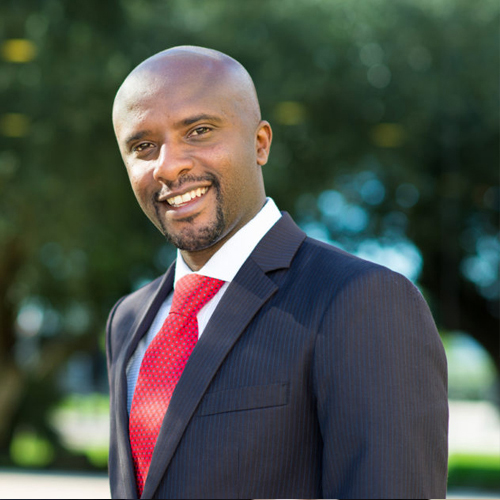

Hon. Mutesi Rusagara
State Minister in charge of Resource Mobilization and Public Investment
View Profile
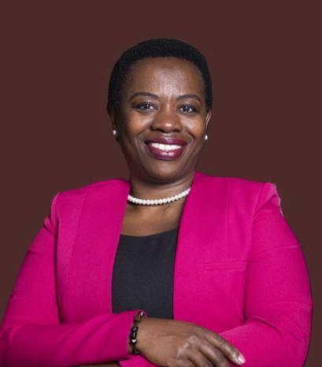


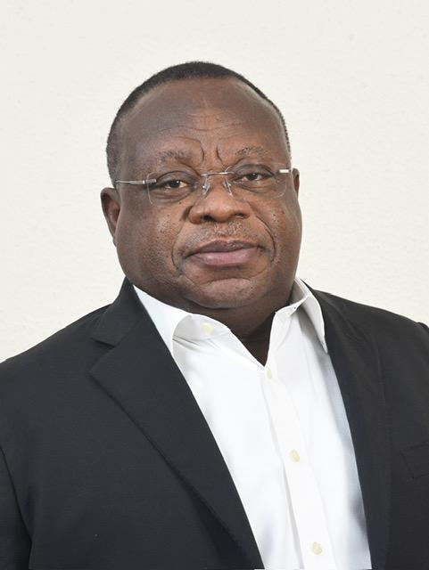
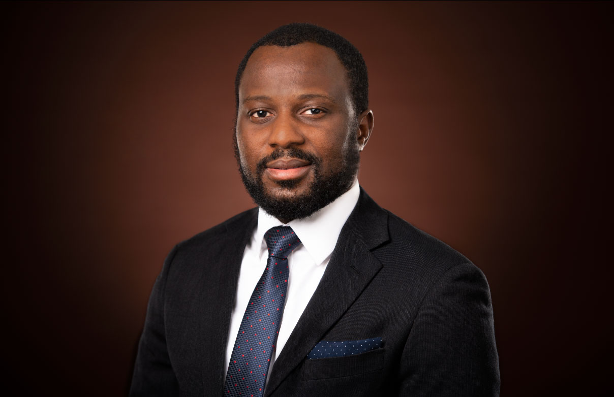

Hon. Marlene Street Forrest, OJ, CD, PhD. (Hon.), JP
Managing Director, Jamaica Stock Exchange
View Profile
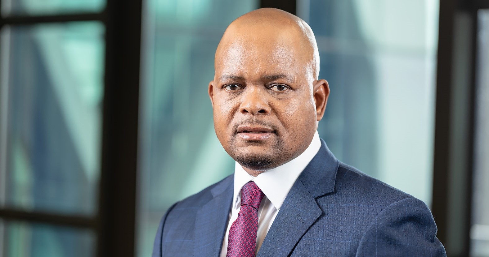


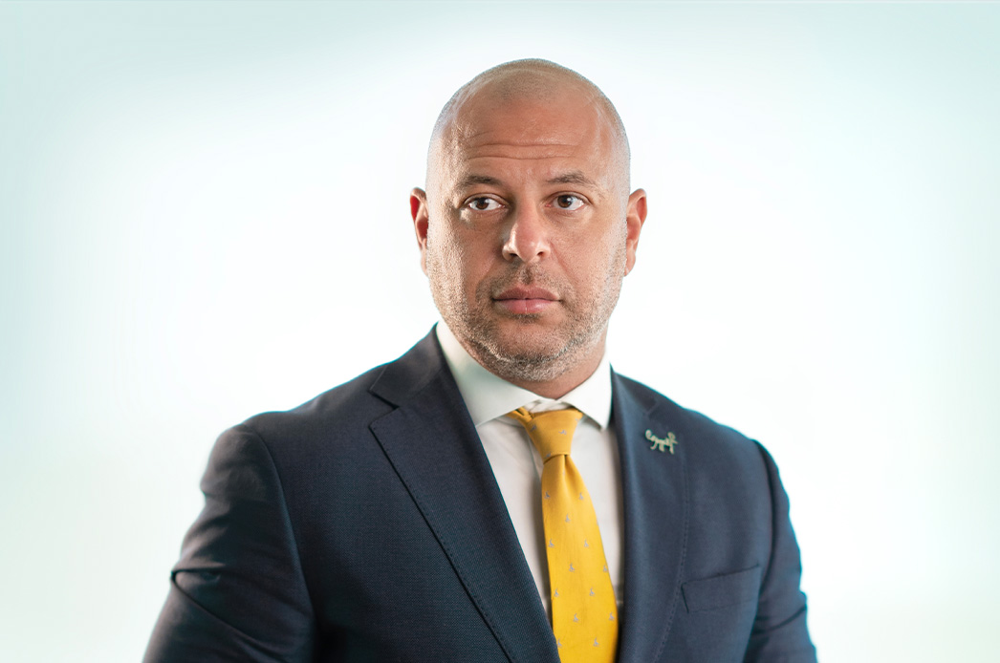
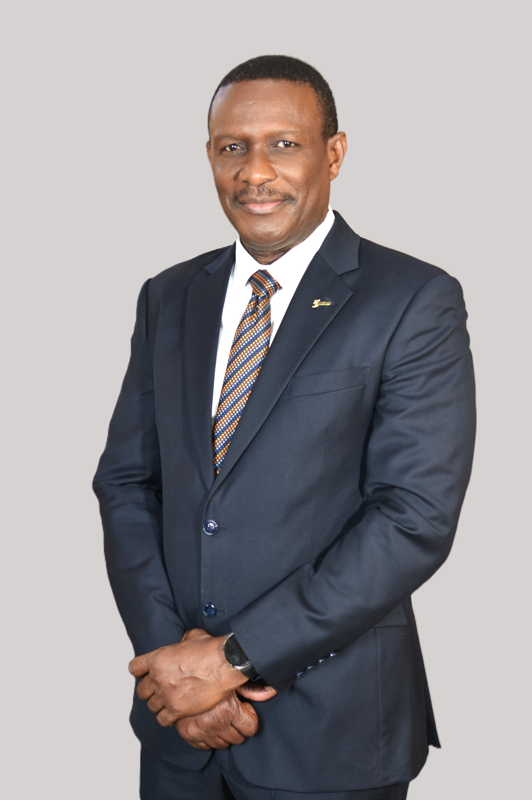


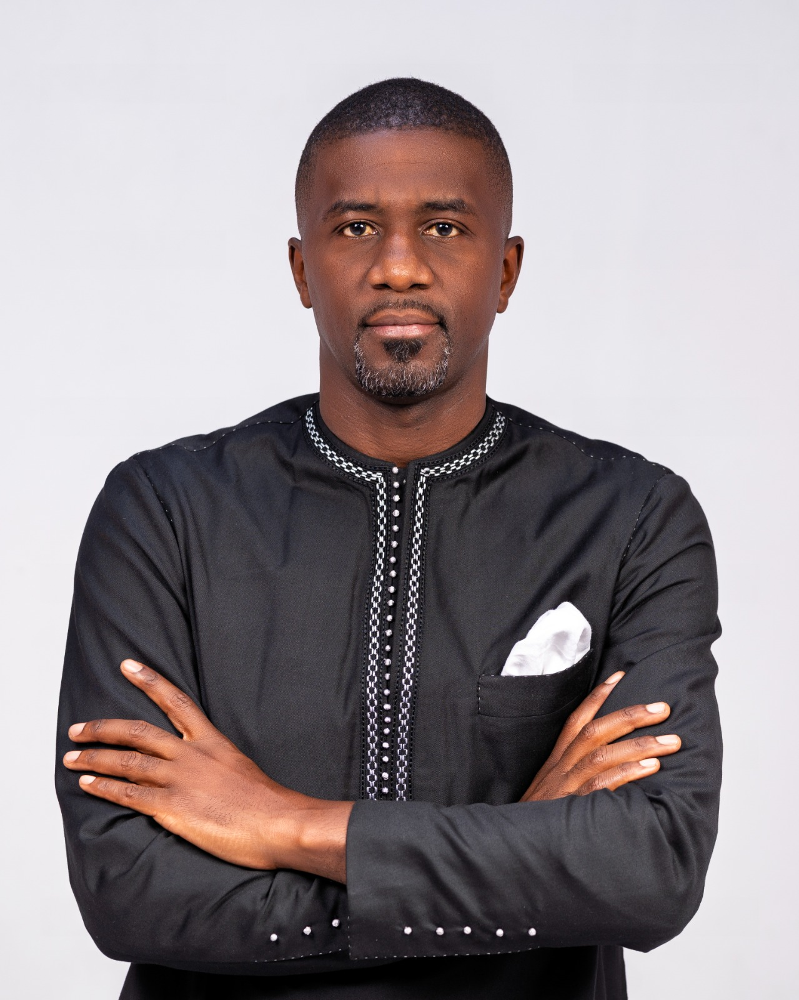

 (002).jpg)


(1).png)

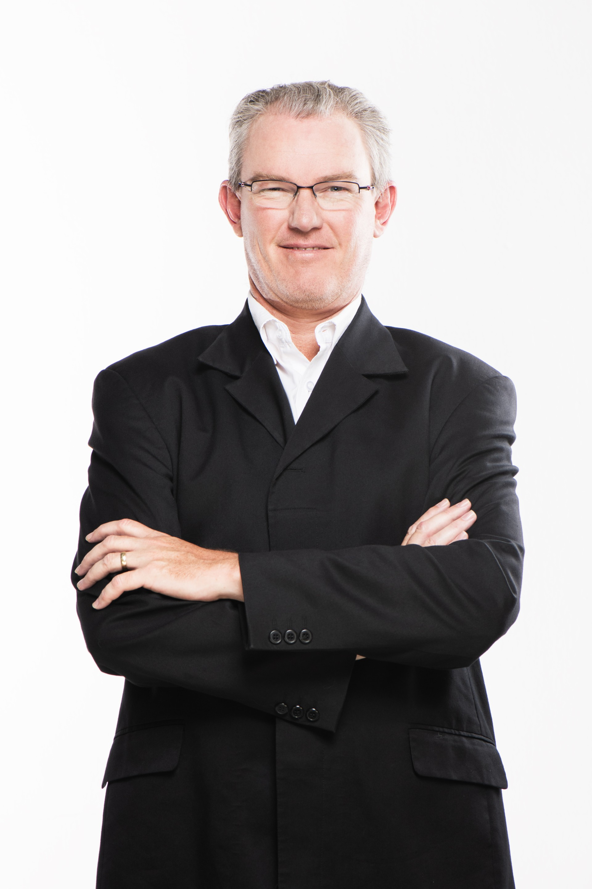

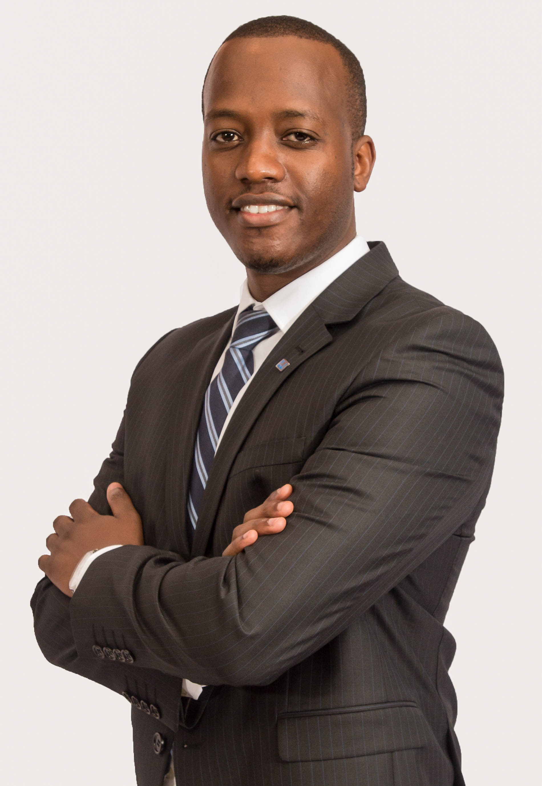
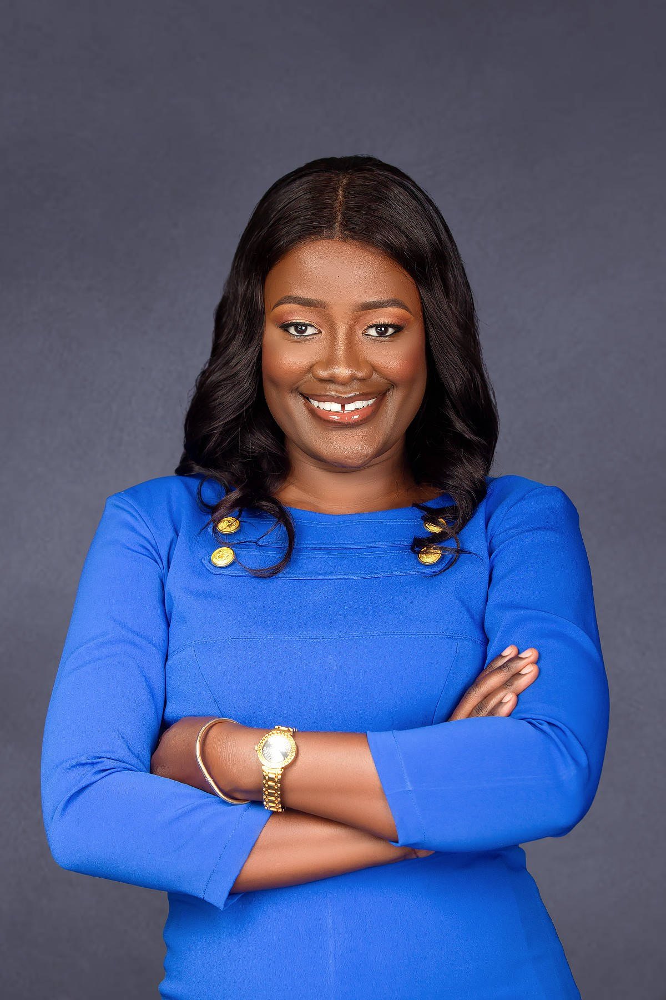

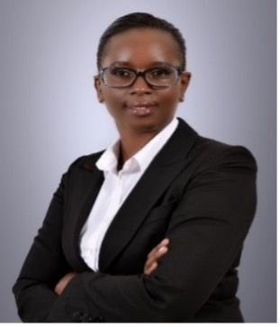
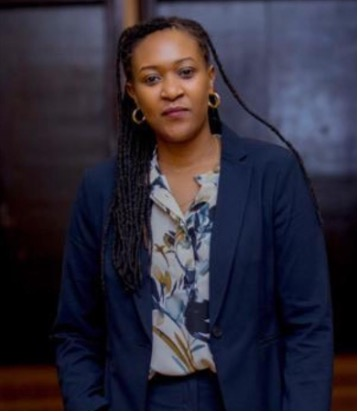


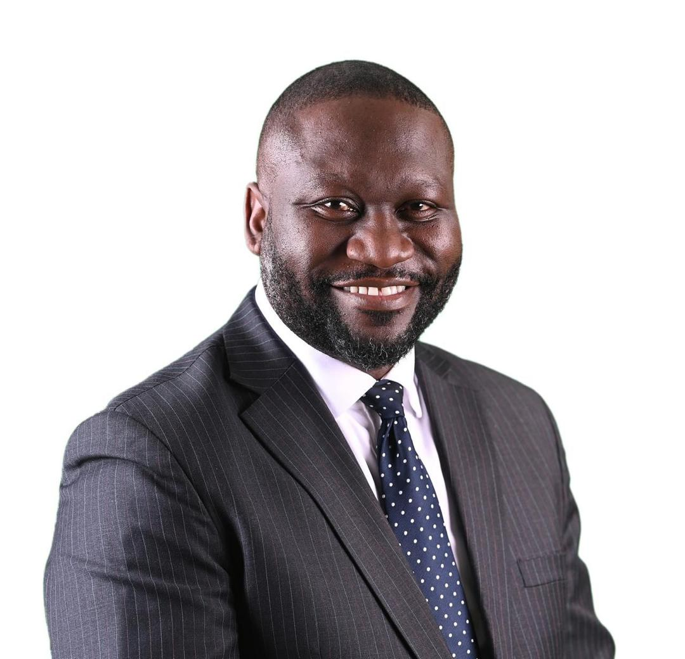

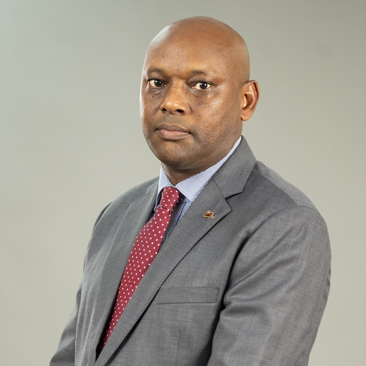
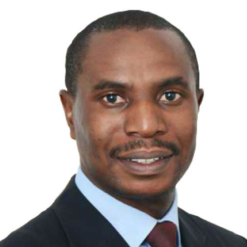


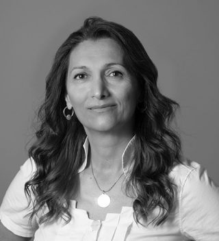